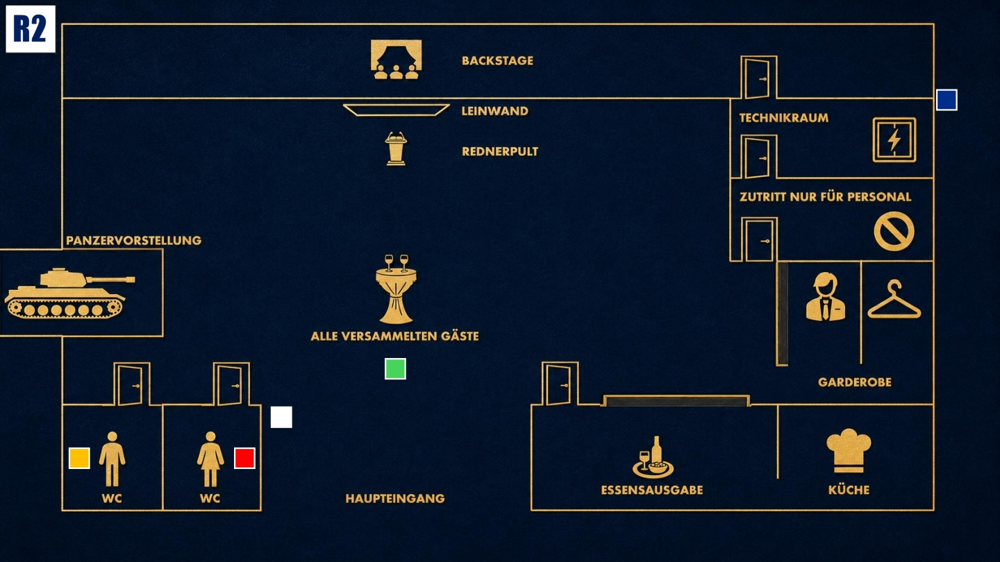

Druck aufbauen
Das Spiel wird intensiver. Nutze neue Informationen klug und bringe andere in Erklärungsnot.

Das Ziel der zweiten Runde
Finde heraus, wer für Coles Tod verantwortlich ist. Beobachte besonders Enisa und Jake und prüfe, wer von beiden mehr weiß, als er zugibt.
Deine Ausgangslage
Cole ist tot, und sein Tod trifft dich persönlich stärker, als du nach außen zeigen darfst. Du weißt, dass dieser Abend außer Kontrolle geraten ist. Dein Plan war Druck, Kontrolle und Entlarvung. Kein Mord. Gleichzeitig taucht nun der Füller auf. Für dich ist klar: Wenn dieser Beweis falsch gedeutet wird, kann er gefährlich werden. Deshalb musst du den Verdacht schnell auf eine andere Person lenken.
Dein Beweis
Zu Beginn der zweiten Runde öffnest du deine Beweiskarte. Lege sie auf den Tisch und lese sie vor. Erkläre, dass der Füller dir gehört. Du verstehst jedoch nicht, wie der Füller am Tatort oder bei einer anderen Person gelandet sein konnte.
Deine Geheimnisse
1. Bruderliebe: Cole war dein leiblicher Bruder. Ihr wurdet nach dem Tod eures Vaters unter neuen Identitäten getrennt aufgezogen. Kurze Zeit vor seinem Tod hast du ihm den Füller geschenkt, mit dem er später ermordet wurde. Das darf jetzt aber keiner wissen.
2. Kontrolle über Enisa: Du weißt, dass Enisa Pagany eine Hochstaplerin ist. Ihre Abschlüsse und beruflichen Nachweise sind gefälscht. Du hast Diana die Beweise geliefert, damit Enisa zur Kooperation gezwungen werden konnte und Jake beeinflusst.
Deine Mission
1. Enisa unter Druck setzen: Erinnere sie dezent an ihre berufliche Verantwortung, falls sie beginnt, Jake zu helfen oder sich zu sehr aus der Situation herauszuhalten.
2. Jake verdächtig machen: Nutze Jakes Vergangenheit als Soldat, um ihn als gefährlich und gewaltbereit darzustellen. Stelle infrage, ob jemand mit seiner Vergangenheit wirklich harmlos sein kann.
Deine Erinnerung an 19:00 Uhr

Zum Vergrößern tippen
Du gehst auf die Toilette und begegnest Zoe auf dem Weg dorthin. Diana begrüßt Gäste am Eingang. Diego sagt, er müsse noch etwas prüfen. Außerdem erinnerst du dich, wie Cole gerade aus der Toilette kam, als du sie betratst.
Mögliche Fragen
An Enisa: „Was machst du eigentlich genau beruflich? Und wo hast du studiert?“
An Jake: „Ist dir ein solcher Fall wie heute Abend in deiner Soldatenzeit schon einmal begegnet?“